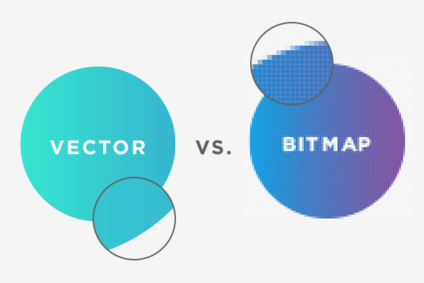

SVG's vs Bitmap Images

Bitmap vs Vector Img (Source)
This website was created to help teach about Vector images (SVG's in paticular),
how they differ from traditional bitmap images, and how to use and create them in your cites.